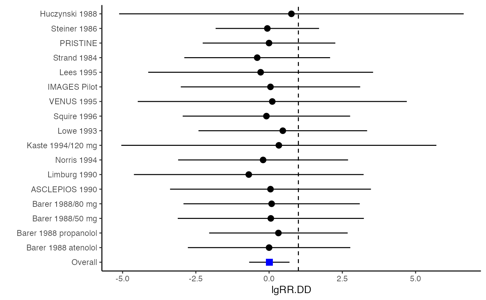
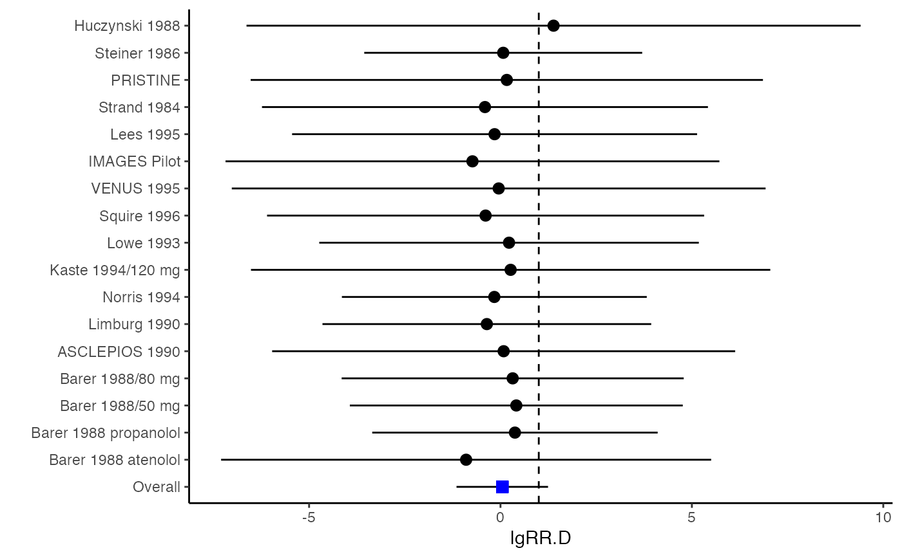

lgRR.vcov.RdThe function lgOR.vcov computes effect sizes and variance-covariance matrix for multivariate meta-analysis when the effect sizes of interest are all measured by log risk ratio (or log relative risk). See mix.vcov for effect sizes of the same or different types.
lgRR.vcov(r, nt, nc, st, sc, n_rt = NA, n_rc = NA)
| r | A \(N\)-dimensional list of \(p \times p\) correlation matrices for the \(p\) outcomes from the \(N\) studies. |
|---|---|
| nt | A \(N \times p\) matrix storing sample sizes in the treatment group reporting the \(p\) outcomes. |
| nc | A matrix defined in a similar way as |
| st | A \(N \times p\) matrix recording number of participants with event for all outcomes (dichotomous) in treatment group. |
| sc | Defined in a similar way as |
| n_rt | A \(N\)-dimensional list of \(p \times p\) matrices storing sample sizes in the treatment group reporting pairwise outcomes in the off-diagonal elements. |
| n_rc | A list defined in a similar way as |
Min Lu
A \(N \times p\) data frame whose columns are computed log risk ratios.
A \(N\)-dimensional list of \(p(p+1)/2 \times p(p+1)/2\) matrices of computed variance-covariance matrices.
A \(N \times p(p+1)/2\) matrix whose rows are computed variance-covariance vectors.
Ahn, S., Lu, M., Lefevor, G.T., Fedewa, A. & Celimli, S. (2016). Application of meta-analysis in sport and exercise science. In N. Ntoumanis, & N. Myers (Eds.), An Introduction to Intermediate and Advanced Statistical Analyses for Sport and Exercise Scientists (pp.233-253). Hoboken, NJ: John Wiley and Sons, Ltd.
Wei, Y., & Higgins, J. (2013). Estimating within study covariances in multivariate meta-analysis with multiple outcomes. Statistics in Medicine, 32(7), 119-1205.
########################################################################## # Example: Geeganage2010 data # Preparing log risk ratios and covariances for multivariate meta-analysis ########################################################################## data(Geeganage2010) ## set the correlation coefficients list r r12 <- 0.71 r.Gee <- lapply(1:nrow(Geeganage2010), function(i){matrix(c(1, r12, r12, 1), 2, 2)}) computvcov <- lgRR.vcov(nt = subset(Geeganage2010, select = c(nt_DD, nt_D)), nc = subset(Geeganage2010, select = c(nc_DD, nc_D)), st = subset(Geeganage2010, select=c(st_DD, st_D)), sc = subset(Geeganage2010, select=c(sc_DD, sc_D)), r = r.Gee) # name computed log risk ratio as y y <- computvcov$ef colnames(y) = c("lgRR.DD", "lgRR.D") # name variance-covariance matrix of trnasformed z scores as covars S <- computvcov$matrix.vcov ## fixed-effect model MMA_FE <- summary(metafixed(y = y, Slist = computvcov$list.vcov)) MMA_FE#> Fixed-effects coefficients #> Estimate Std. Error z Pr(>|z|) 95%ci.lb 95%ci.ub #> lgRR.DD 0.0085 0.3514 0.0242 0.9807 -0.6802 0.6972 #> lgRR.D 0.0466 0.6101 0.0764 0.9391 -1.1492 1.2424 #> --- #> Signif. codes: 0 ‘***’ 0.001 ‘**’ 0.01 ‘*’ 0.05 ‘.’ 0.1 ‘ ’ 1 #> #> Multivariate Cochran Q-test for heterogeneity: #> Q = 0.9816 (df = 32), p-value = 1.0000 #> I-square statistic = 1.0% #>####################################################################### # Running random-effects model using package "mvmeta" or "metaSEM" ####################################################################### #library(mvmeta) #mvmeta_RE = summary(mvmeta(cbind(lgRR.DD, lgRR.D), # S = S, data = as.data.frame(y), # method = "reml")) #mvmeta_RE # maximum likelihood estimators from the metaSEM package # library(metaSEM) # metaSEM_RE <- summary(meta(y = y, v = S)) # metaSEM_RE ############################################################## # Plotting the result: ############################################################## obj <- MMA_FE # obj <- mvmeta_RE # obj <- metaSEM_RE # pdf("CI.pdf", width = 4, height = 7) plotCI(y = computvcov$ef, v = computvcov$list.vcov, name.y = c("lgRR.DD", "lgRR.D"), name.study = Geeganage2010$studyID, y.all = obj$coefficients[,1], y.all.se = obj$coefficients[,2], hline = 1)#> $`Plotting lgRR.DD`#> #> $`Plotting lgRR.D`#># dev.off()